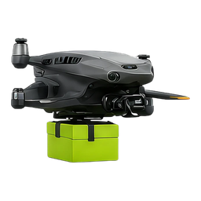

Package delivery Parcels, documents, small goods — across the citySearch & filters ▸ narrow the service list
Counter ▸ how many match / re-sort
Service list · cards ▸ browse · tap a card to start an order
Search & filters ▸ narrow the service list
Counter ▸ how many match / re-sort
Service list · cards ▸ browse · tap a card to start an order